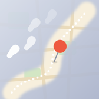
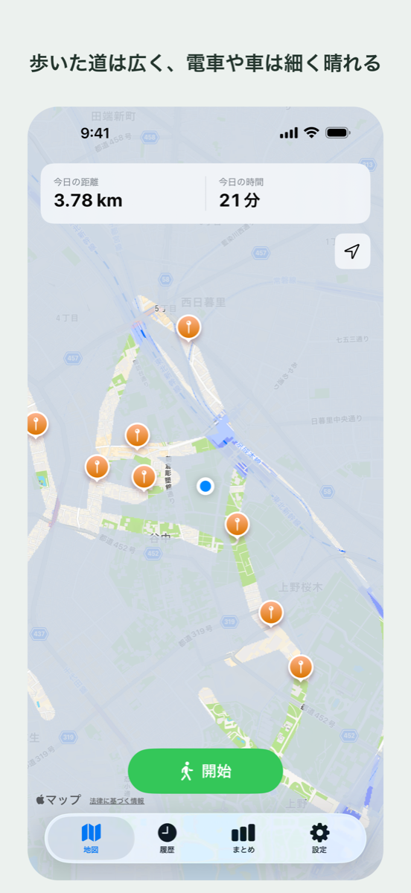
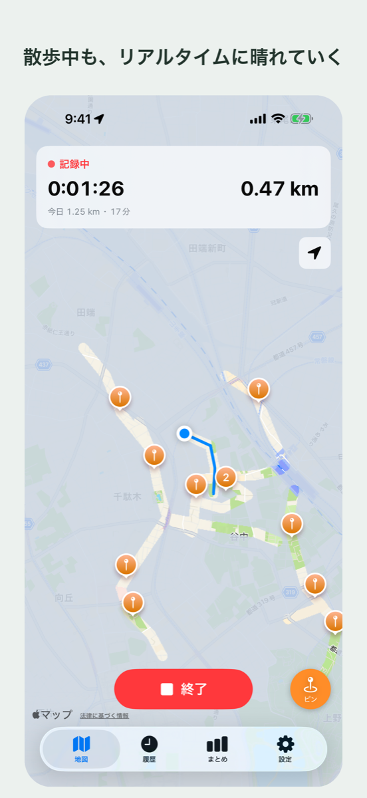
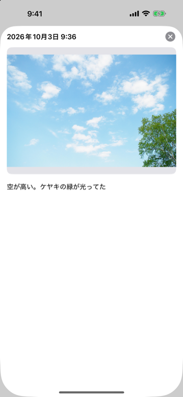
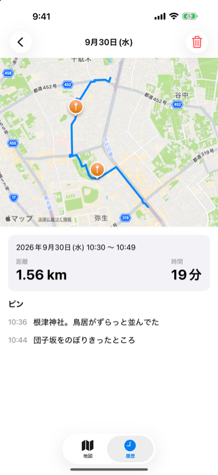
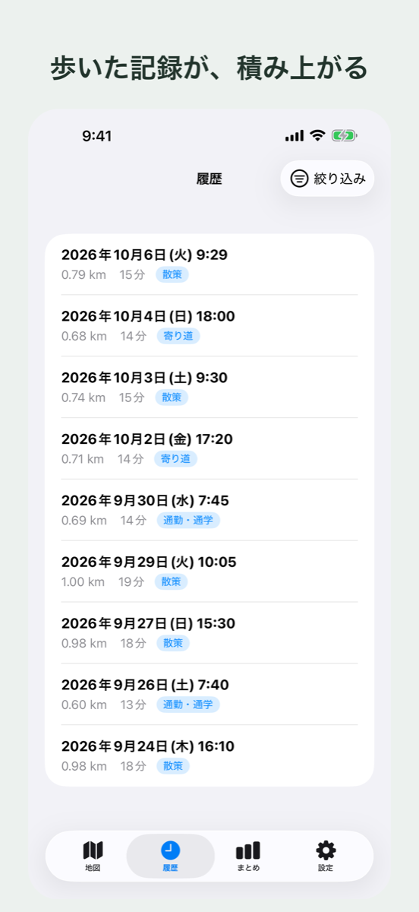

iPhone アプリ
知らない道を歩いた日のこと、地図の上に残っていますか。
MichiLog（ミチログ）は、歩いた道の霧が晴れていく地図に、その場で撮った写真とメモが残る散歩アプリです。

歩いた道の周りだけ霧が晴れ、晴れた範囲はこれまでの散歩の積み重ねとして広がっていきます。
霧は薄く透けていて、下の道路や地名がうっすら見えます。まだ歩いていない道が、どこにあるかは分かります。
開始ボタンを押して歩き、終了ボタンを押すだけ。散歩のルート・距離・時間が記録され、今日歩いた距離と時間は地図の画面でいつでも見られます。
画面を閉じても、iPhone をロックしても記録は続きます。
電車や車など、歩く速さを超える移動が続いた区間は、ルート・距離・霧に入りません。


散歩中は、現在地にピンを打って写真とメモを残せます。写真もメモも任意なので、気になった場所にさっと印だけ付けることもできます。
撮った写真は iPhone の写真アプリ（カメラロール）に保存され、アプリが持つのは写真への参照だけです。
写真アプリで消した写真は、MichiLog でも表示されなくなります。
過去の散歩は一覧から選んで、ルートとピンを見返せます。
不要な散歩は削除でき、削除すると霧も残った散歩から作り直されます。


「履歴」タブに、散歩が新しい順に並びます。日付と開始時刻、距離と時間が1行に出ます。
記録できる件数に上限はありません。
無料で使えます。広告もアプリ内課金もありません。